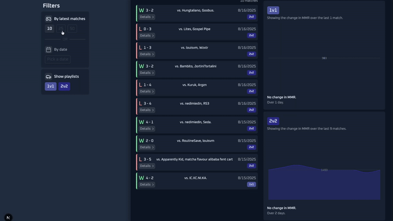
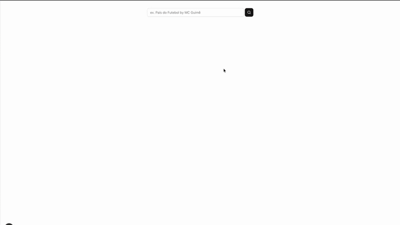
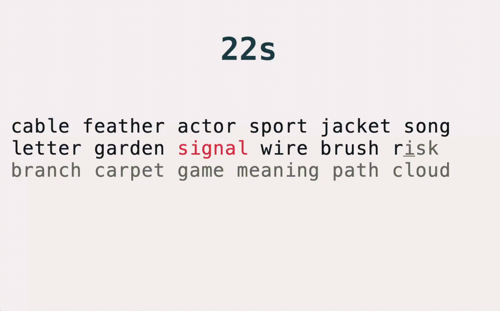

Personal Rocket League Performance Tracker
A full-stack personal Rocket League analytics app that extracts post-match data via a custom mod and displays performance trends to analyze my match history.

Language Learning Tool Through Songs
An app to quickly build a collection of vocabulary words from songs lyrics in your target language and extract them to flashcard platforms like Quizlet.

WPM Typing Speed Tester
An intuitive typing test application to measure metrics such as typing accuracy, words per minute, and more.